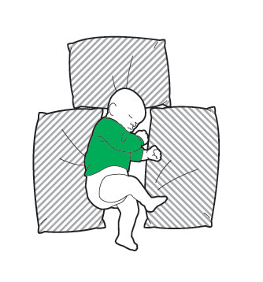
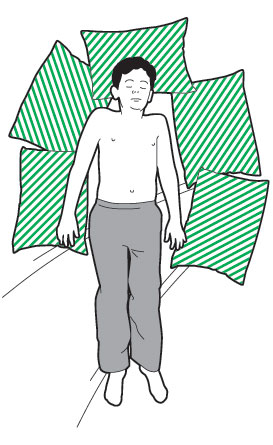

Seizures (fits) in children
During a seizure, lots of muscles in the body contract uncontrollably.
It’s also called a convulsion or fit.
Seizures are caused by something interrupting the electrical activity in the brain and they usually make someone lose responsiveness.
In children, seizures normally happen as a result of a high temperature, or because of an infection such as a throat or ear infection.
This is because the electrical systems in their brain are not developed enough to deal with the body’s high temperature.
Steps
- Don’t restrain or move them. Instead, protect them from hurting themselves. Clear away any potentially dangerous objects, like hot drinks or sharp objects, and put pillows or soft padding around them.


- Cool them down. Take away any bedding and take off a layer of clothing.
- Make sure they get some fresh air by opening a door or window, but be careful you don’t cool them down too much.
- Once the seizure has stopped, they’re usually very sleepy or unresponsive, so put them into the recovery position to help them keep their airway open.
- Then call 999 or 112 for emergency medical help.
- Reassure them – and whoever’s looking after them, if that is not you.
- While you wait for help to arrive, keep checking their breathing, pulse and level of response.